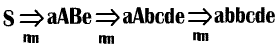

Восходящий синтаксический анализ.
В этом разделе будет рассмотрен основной метод восходящего синтаксического анализа, известный как синтаксический анализ типа "перенос/свертка" (shift-reduce) и называемый далее сокращенно ПС-анализом.
ПС-анализ пытается строить дерево разбора для входной строки, начиная с листьев (снизу) и работая по направлению к корню дерева (вверх). Этот процесс можно рассматривать как свертку строки w к стартовому символу грамматики. На каждом шаге свертки (reduction step) некоторая подстрока, соответствующая правой части продукции, заменяется символом из левой части этой продукции, и если на каждом шаге подстроки выбираются корректно, то мы получаем обращенное правое порождение.
Пример:
Рассмотрим грамматику
S ® aABe
A ® Abc | b
B ® d
Предложение abbcde сводится к S с помощью следующих шагов:
abbcde
aAbcde
aA.de
аАВе
S
Мы сканируем строку abbcde в поисках подстроки, соответствующей правой части какой-либо продукции. Такими подстроками являются b и d. Выберем крайнее слева b и заменим его нетерминалом А, который представляет собой левую часть продукции А ® b; таким образом, получим строку aAbcde. Теперь правым частям продукций соответствуют подстроки Abc, b и d. Хотя b и является крайней слева подстрокой, соответствующей правой части одной из продукций, выберем для замены подстроку Abc и заменим ее нетерминалом А в соответствии с продукцией А ® Abc. В результате получим строку aAde. Заменяя d на В, левую часть продукции В ® d, получаем аАВе, которая в соответствии с первой продукцией заменяется стартовым символом S. Итак, последовательность из четырех сверток позволяет привести строку abbcde к стартовому символу S. Эти сокращения представляют собой обращенное (т.е. записанное в обратном порядке) правое приведение
